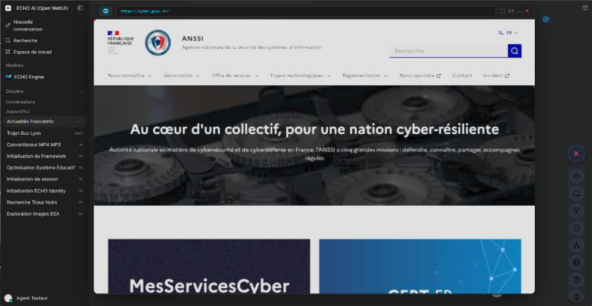
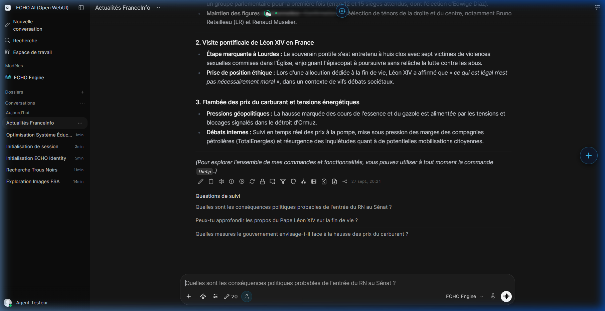
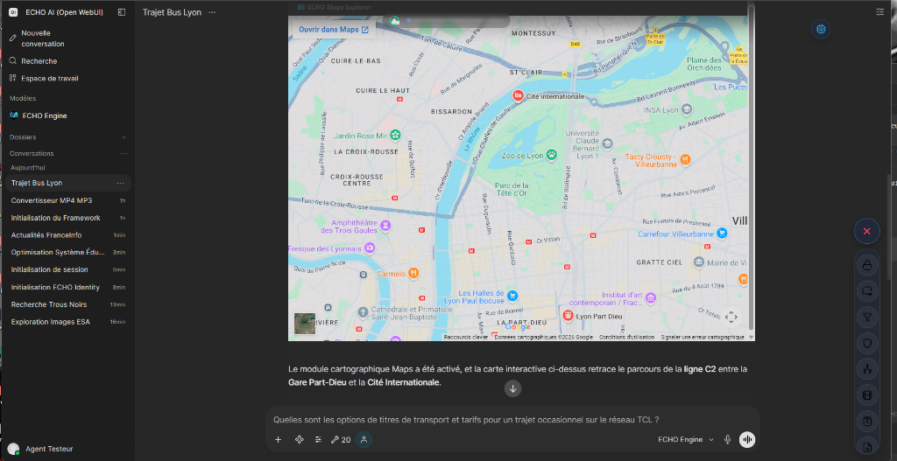

11. Recherche & Navigation
L'IA n'est pas enfermée dans une bulle. ECHO dispose de capacités d'exploration qui lui permettent d'interagir avec le monde extérieur (le Web) et avec votre monde intérieur (votre Espace Personnel de fichiers), toujours sous votre contrôle et dans le respect strict de votre vie privée.
1. Recherche Web et Navigation Autonome

ECHO possède un moteur de recherche souverain intégré qui ne traque pas vos requêtes. S'il a besoin de confirmer une information ou de trouver une actualité récente, il va d'abord chercher sur le web.
Si la simple recherche ne suffit pas (par exemple pour extraire des données d'un site complexe), l'IA prend littéralement le contrôle d'un Navigateur Web fantôme. Elle est capable d'ouvrir des pages, de cliquer sur des boutons, de faire défiler l'écran, et d'analyser visuellement le contenu, exactement comme le ferait un humain. Cela lui permet d'accomplir des missions de recherche complexes en totale autonomie.
2. Explorateur de l'Espace Personnel (Le Vault)

Votre Espace Personnel est votre coffre-fort de fichiers. Lorsque vous téléversez un PDF de 500 pages, une archive de code source ou une image haute résolution, ECHO peut les analyser en profondeur. Il peut lire le texte ligne par ligne, "regarder" les images, et croiser les informations de plusieurs fichiers.
Le système vous garantit un cloisonnement absolu : vos fichiers vous appartiennent et sont inaccessibles aux autres utilisateurs du système.
3. Intelligence Spatiale (Cartographie)

ECHO est capable de générer des coordonnées géographiques et de créer des cartes interactives. Si vous lui demandez un itinéraire ou l'analyse d'une zone géographique, il génèrera une véritable carte dynamique que vous pourrez manipuler directement depuis l'interface.
⚙️ Dossier d'Ingénierie & Spécifications
1. Web Intelligence (Browser Worker)
Le Browser Worker (FastAPI, Port 5002) pilote une instance Chromium Headless (Playwright). Il permet la Navigation Autonome en exécutant des actions distantes (14 actions disponibles : clic, scroll, extraction DOM). Il intègre des mécanismes d'évasion WAF avancés (usurpation WebGL, masquage de webdriver) pour contourner Cloudflare/DataDome. La recherche souveraine s'appuie quant à elle sur un proxy local SearXNG.
2. Vault Explorer (file_content_explorer.py)
- Isolement : La résolution des chemins (
resolve_upload_file_path) vérifie systématiquement leuser_id. Un utilisateur ne peut pas accéder aux fichiers d'un autre. - Espaces de travail : Les fichiers sont répartis en trois espaces :
files(uploads classiques via OWUI),main(Code source validé), etsandbox(Données temporaires du Codex). - Méthodes : Lecture paginée via
read_raw_file_content(text, base64, hex limités à 16 Ko/chunk). Sondage direct du modèle par injectioninlineDataviasemantic_probe.
3. Maps Grounding (gemini_maps_grounding.py)
Permet l'ancrage spatial. Génère des données topologiques structurées injectées dynamiquement dans l'UI via le pattern Data Island, instanciant une carte Leaflet côté client (HUD).
Navigation Engine (navigation_engine_tool.py)
- delegate_web_browsing : Interactions web complexes (formulaires, clics, lecture intégrale d'URL).
- analyze_web_page : Analyse sémantique immédiate pour trouver une info précise.
- archive_web_page : Archivage RAG asynchrone de pages Web volumineuses dans la Mémoire Vectorisée.
- prune_heavy_context : Élagage proactif (purge les cartes DOM, A11y et images obsolètes pour éviter le Token Bloat).
Sovereign Web Search (sovereign_web_search.py)
- search_instant_answer : Définitions de concepts via DuckDuckGo.
- search_web : Recherche web simple pour extraire des faits rapides.
- delegate_deep_research : Délégation de la recherche complexe à un Agent Autonome multi-tours.
Data Broker (delegate_to_data_broker.py)
- ask_data_broker : Délégation d'une recherche d'informations ou d'une extraction.